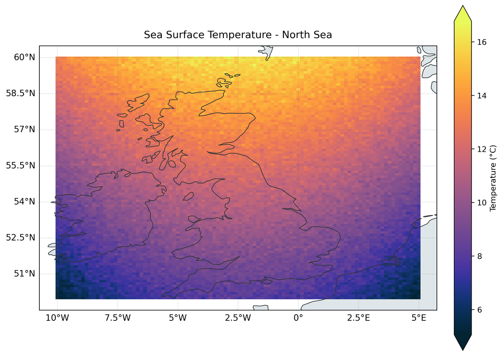
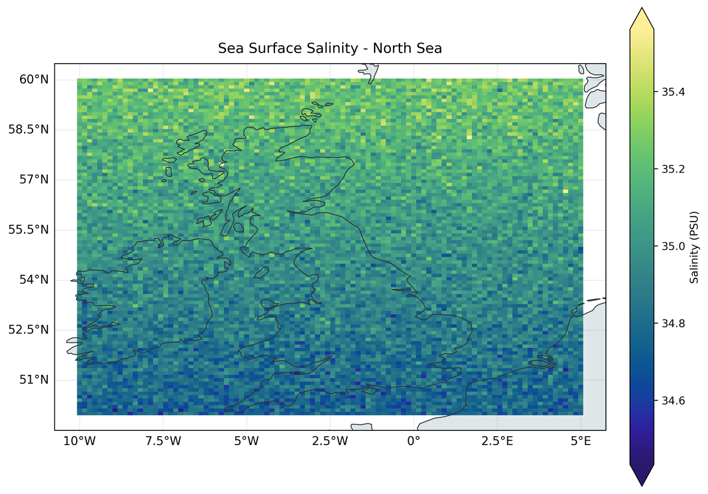
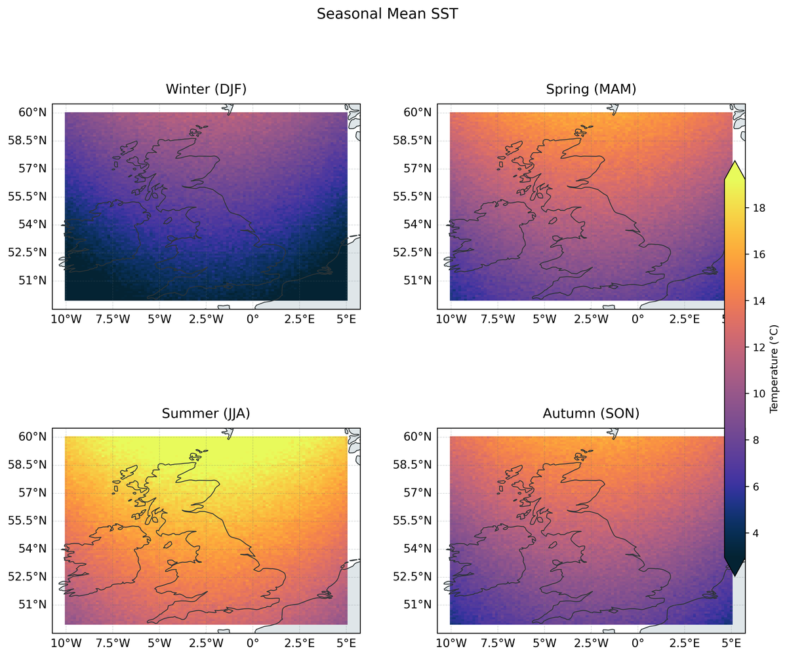
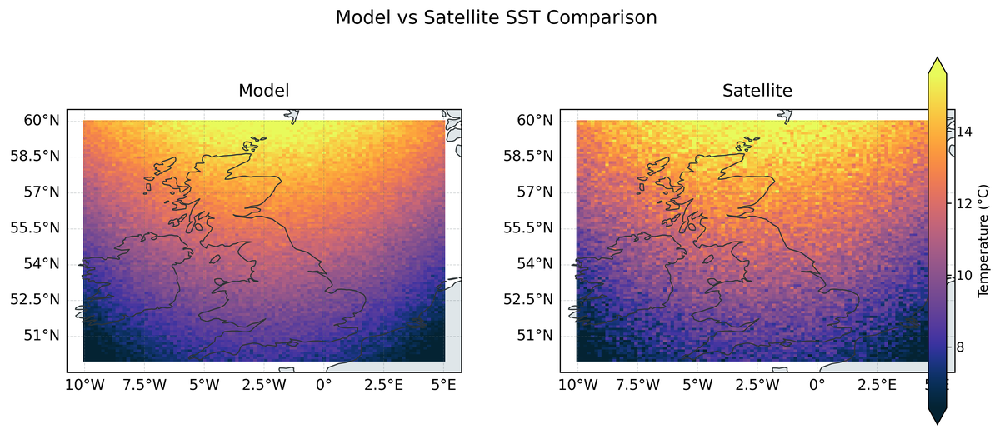

ocean-plot
Scientific plotting and animation for ocean model data. Provides OceanPlotter
for Cartopy-based map plots, Animator for MP4 / interactive HTML time-series
animations, and Annotations for time-gated labels, points, boxes, and arrows that
can be placed over any frame. All output is driven by YAML config files so plots
are reproducible and tweakable without touching Python.
For the full ocean-* toolkit, install via ocean-stack rather than this package alone.
ocean-stack sets up all four packages in a single conda environment — the recommended route because xesmf/esmpy, used for regridding in ocean-data and ocean-prep, must come from conda-forge and cannot be reliably pip-installed.
Use the standalone installation below only if you need this package in isolation.
Part of the ocean-* family: ocean-data · ocean-plot · ocean-prep · ocean-post
Gallery
 |
 |
Sea surface temperature — cmocean thermal colormap, auto coastline resolution |
Salinity — cmocean haline colormap selected automatically from variable name |
 |
 |
| Seasonal means — 2×2 subplot layout with shared colorbar | Model vs satellite — side-by-side comparison layout |
Installation
# With conda (recommended — cartopy requires conda-forge)
conda env create -f environment.yml
conda activate ocean-plot
# Or with pip (ocean-data must be installed first)
pip install -e ../ocean-data
pip install -e .
pip install -e . # MP4 output also needs the ffmpeg binary (conda install ffmpeg)
Quick start
Before plotting you need a NetCDF file with ocean or atmospheric data.
Use --info to inspect what variables and dimensions it contains:
ocean-plot --info /path/to/your/model.nc
Then either run the interactive wizard to generate a ready-to-use YAML:
init-plot # guided config builder for static maps
init-animation # guided config builder for animations
Or copy one of the example configs and edit the input.file and variable fields:
cp examples/plot_map.yaml my_plot.yaml
# edit my_plot.yaml — set input.file and input.variable
ocean-plot --config my_plot.yaml --show
from ocean_plot.plotting import OceanPlotter
import numpy as np
plotter = OceanPlotter()
fig, ax, im = plotter.plot_map(
data=sst_array,
lon=lon_2d, lat=lat_2d,
variable='sst',
title='Sea Surface Temperature',
cbar_label='SST [°C]',
vmin=-2, vmax=25,
)
fig.savefig('sst.png', dpi=150, bbox_inches='tight')
Commands
| Command | Description |
|---|---|
ocean-plot |
Render a static Cartopy map from a NetCDF file using a YAML config |
ocean-animations |
Create time-lapse animations (horizontal map, transect, or two-panel comparison) |
init-plot |
Interactive wizard: generate an ocean-plot YAML config |
init-animation |
Interactive wizard: generate an ocean-animations YAML config |
# Static map from a YAML config
ocean-plot --config plot.yaml
ocean-plot --config plot.yaml --show # open in viewer
ocean-plot --config plot.yaml --time-index mean # time-averaged
ocean-plot --info /data/model.nc # inspect variables first
# Animation from a YAML config
ocean-animations --config animation_map.yaml # horizontal map
ocean-animations --config animation_transect.yaml # vertical transect
ocean-animations --config animation_comparison.yaml # two-panel comparison
# Interactive wizards
init-plot # guided YAML builder for ocean-plot
init-animation # guided YAML builder for ocean-animations
Plot types
Static maps (ocean-plot)
Renders a single 2-D field as a Cartopy map with coastlines, land fill, and
auto-selected colormaps (via cmocean). Config keys: input, output,
subset, vmin, vmax, colormap, title, style, annotations.
plottype: map
input:
file: /data/model.nc
variable: temp
output:
file: sst_jan.png
dpi: 150
Animations (ocean-animations)
Three plot types, each driven by a YAML config:
plottype: |
Description |
|---|---|
map |
Horizontal field animation with optional time-series panels |
transect |
Depth–time or latitude–depth section |
comparison |
Side-by-side two-panel comparison (model vs observations) |
plottype: map
input:
file: /data/model.nc
variable: zeta
output:
file: ssh_animation.mp4
fps: 10
The comparison type supports per-panel unit conversion (offset/factor),
per-panel colour ranges (colorbar: individual), and time-series subplots that
overlay both datasets on the same panel:
plottype: comparison
left:
input: {file: model.nc, variable: temp}
title: "Model"
right:
input: {file: cci_sst.nc, variable: analysed_sst}
title: "Observations"
offset: -273.15 # K → °C
colorbar: shared
timeseries:
- label: "Frontal zone"
lat: 58.0
lon: 11.0
Annotations
Place text, points, boxes, lines, and arrows on any plot or animation frame. For animations, each annotation can be turned on/off at a specific time:
annotations:
- type: text
x: 5.0
y: 55.0
text: "Storm event"
time_on: "2023-01-15"
time_off: "2023-01-20"
- type: point
x: 3.5
y: 53.2
label: "FINO1"
Matplotlib style
ocean-plot and ocean-animations both honour matplotlib's native three-level
config hierarchy (system → user ~/.config/matplotlib/matplotlibrc → per-project
matplotlibrc in the working directory). To apply a named style sheet for a
single run, add style: to the YAML:
style: dark_background
Guides and examples
| File | Topics |
|---|---|
| examples/animations_guide.md | Full animation workflow, all plot types, annotations, style |
| examples/plot_guide.md | Static map workflow, init-plot wizard |
| examples/animation_map.yaml | Annotated map animation template |
| examples/animation_transect.yaml | Annotated transect animation template |
| examples/animation_comparison.yaml | Annotated two-panel comparison template |
| examples/plot_map.yaml | Annotated static map template |
| examples/plotting_showcase.py | Programmatic showcase of OceanPlotter features |
Python 3.11+ · License: MIT